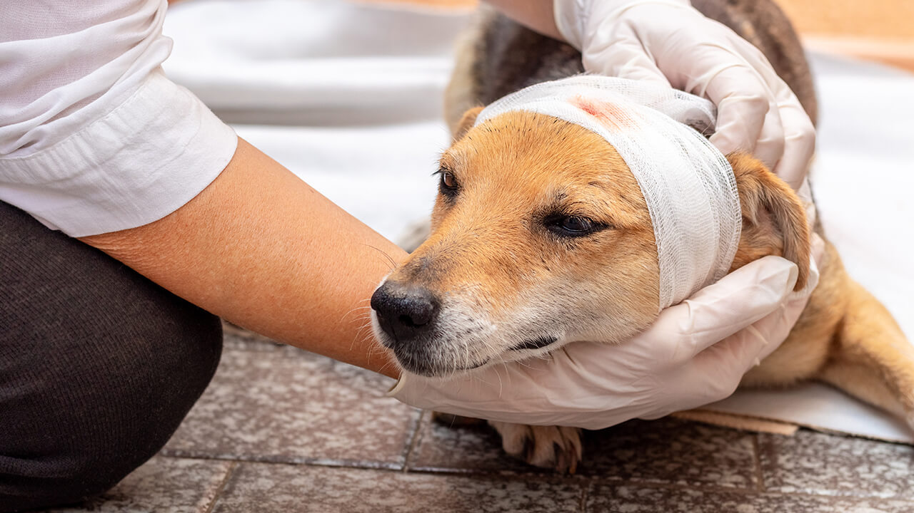

Cada vida merece uma segunda chance

O Projeto Aptas atua no resgate, cuidado e encaminhamento responsável de animais em situação de abandono, buscando transformar histórias de vulnerabilidade em novas oportunidades.
Conheça nossos projetosO Projeto Aptas nasceu do compromisso de transformar a realidade de animais que foram encontrados em situação de abandono, negligência ou vulnerabilidade.
Nosso trabalho começa no acolhimento e se estende aos cuidados necessários para a recuperação, à busca por famílias responsáveis e ao acompanhamento de cada história até que um novo começo seja possível.
Acreditamos que o cuidado com os animais também passa pela conscientização da comunidade. Por isso, buscamos incentivar a adoção responsável, a guarda consciente e a participação de pessoas dispostas a contribuir para essa transformação.
Entre em contato
E-mail: contato@projetoaptas.org
Telefone: (XX) XXXXX-XXXX